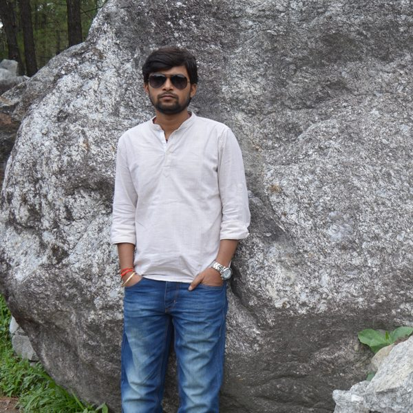

Dr. Jitendra Kumar

Dr. Jitendra Kumar is an Assistant Professor in the Department of Mathematics, Bioinformatics, and Computer Applications, Maulana Azad National Institute of Technology Bhopal, Madhya Pradesh, India (An Institution of National Importance). Prior to this, he was with the Department of Computer Applications, National Institute of Technology Tiruchirappalli, Tamilnadu, India. Dr. Kumar obtained his PhD in Machine Learning and Cloud Computing from National Institute of Technology Kurukshetra, Haryana, India in 2019. He has authored and published a significant number of research articles in peer reviewed and indexed journals and conferences of high repute. He is a senior member of IEEE and member of several other IEEE technical committees including CIS, TCCLD, TCSVC, SIGHT. He is also a member of ACM and MIR Labs. He is an active review board member of various journals and conferences of repute like IEEE Transactions on Parallel and Distributed Systems, IEEE Transactions on Computers, IEEE Systems Journal, IEEE Access, IJCNN, FUZZ-IEEE, CEC, etc. His current research interests include Cloud Computing, Machine Learning, Computational Intelligence, Time Series Forecasting, and Optimization.